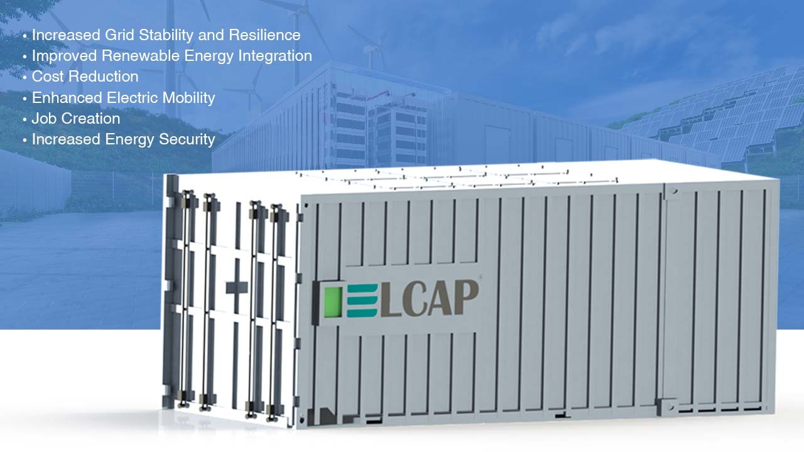
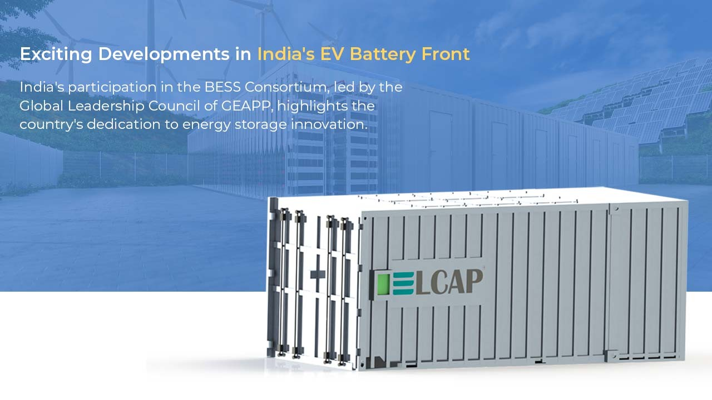

India's entry into the Battery Energy Storage Systems (BESS) bloc, an initiative by the Global Leadership Council, is all set to transform its energy scene.
It will bring about substantial improvements in grid stability, the integration of renewable energy, cost reduction, electric mobility, job creation, and energy security.
This strategic step aligns with the country's dedication to constructing a greener, more sustainable, and resilient energy future.

1. Increased Grid Stability and Resilience
- This initiative holds the key to enhancing grid stability by storing excess renewable energy generated during peak hours.
- This innovation reduces reliance on traditional coal-based power generation, contributing to a cleaner energy mix and bolstering the resilience of the power grid.
2. Improved Renewable Energy Integration
- The fluctuating nature of renewable energy sources like solar and wind presents challenges for smooth integration into the power grid.
- However, BESS tackles this issue by storing surplus energy, stabilizing fluctuations, and facilitating greater renewable energy generation.
3. Cost Reduction
- BESS plays a vital role in reducing electricity costs by managing peak demand and optimizing existing infrastructure.
- This is crucial for making sustainable energy solutions economically viable and accessible.
4. Enhanced Electric Mobility
- In electric mobility, BESS acts as a facilitator by providing charging infrastructure and managing grid load fluctuations caused by EVs.
- This integration improves the overall efficiency of the EV ecosystem, aligning with India's sustainable transportation goals.
5. Job Creation
- The growing BESS industry is expected to create numerous job opportunities in manufacturing, installation, maintenance, and research & development.
- This not only drives economic growth but also fosters a skilled workforce in the renewable energy sector.
6. Increased Energy Security
- By reducing reliance on imported fossil fuels, BESS enhances India's energy security and independence.
- This is a key component of the nation's long-term strategy for a stable and self-sufficient energy supply.
Specific Changes Expected in India
The following specific changes are anticipated as India embraces BESS:
- The Indian government is expected to introduce policies and incentives to attract investments, fostering the development of a strong BESS market.
- With supportive policies and a growing domestic market, large-scale BESS projects will likely be deployed across various sectors, including utilities, industries, and commercial buildings.
- Significant investments in research and development are expected, with a focus on advanced battery chemistries, efficient grid integration solutions, and cost-effective manufacturing processes.
- India is likely to initiate training programs and educational courses to meet the demand for skilled professionals in the BESS industry, ensuring a workforce equipped to drive innovation.
- Collaborations with international players in the BESS industry are expected to facilitate access to cutting-edge technology, expertise, and investment, fostering a global exchange of knowledge and resources.
Exciting Developments in India's EV Battery Front

India's participation in the BESS Consortium, led by the Global Leadership Council of GEAPP, highlights the country's dedication to energy storage innovation.
The aim of securing 5 GW of BESS commitments by 2024, along with government-endorsed viability gap funding, further cement India's position as a leader in the EV battery sector.
The expansion of BESS resolves intermittency problems, speeds up the integration of renewable energy, and contributes to achieving a net-zero future. This unlocks value streams and provides crucial grid-balancing support.
Conclusion
India's foray into the BESS landscape signifies a crucial milestone in pursuing a sustainable and resilient energy future. By harnessing the power of BESS, the country can tackle pressing issues like grid stability, renewable energy integration, and electric mobility.
Through a multifaceted approach that includes policy support, international collaboration, and investment in research and development, India emerges as a significant player in the global shift towards clean energy. As the nation embraces these transformative changes, it ensures its energy security and sets an inspiring example for the rest of the world.